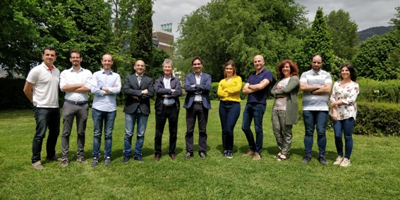
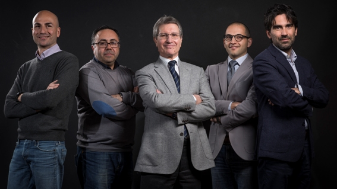
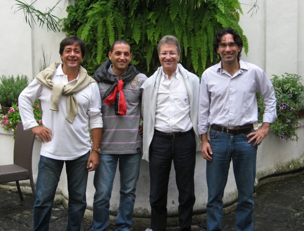

mailing list
- If you want to receive updates on LARAM initiatives, join the LARAM Mailing List by sending an email to laram@unisa.it, with subject: "LARAM mailing list".

.
Prof. Leonardo Cascini
cascinileonardo@gmail.com
https://www.scopus.com/authid/detail.uri?authorId=6506496308
Prof. Settimio Ferlisi
Tel +39 089 96 4317
sferlisi@unisa.it
https://docenti.unisa.it/005253/home
Prof. Michele Calvello
mcalvello@unisa.it
Tel +39 089 96 3439
https://michelecalvello.wordpress.com/
Prof. Sabatino Cuomo
scuomo@unisa.it
Tel +39 089 96 4231
https://docenti.unisa.it/020363/en/curriculum
Prof. Dario Peduto (Chair)
Tel +39 089 96 4120
dpeduto@unisa.it
http://www.unisa.it/docenti/dariopeduto/index
Members
Address your correspondence to:
LARAM School
Università di Salerno - Dipartimento di Ingegneria Civile (DICIV)
Via Giovanni Paolo II, 132 - 84084 Fisciano (SA) - ITALY
Please, do not hesitate to contact us
|
Tel: +39 089 96 3439, +39 089 96 4231, +39 089 96 4120 |
|
E-mail: laram@unisa.it |
(from left to right: Pooyan Ghasemi*, Antonio Marchese*, Gianfranco Nicodemo*, Sabatino Cuomo (LARAM Coordinator), Leonardo Cascini (LARAM President), Michele Calvello (LARAM Coordinator), Maria Rosaria Scoppettuolo*, Dario Peduto (Chair of the Technical Committee), Mariagiovanna Moscariello*, Gaetano Pecoraro*, Maria Grazia Stoppiello*)
* member of the LARAM Technical Committee

(from left to right: Dario Peduto, Settimio Ferlisi, Leonardo Cascini, Sabatino Cuomo, Michele Calvello)

(from left to right: Giuseppe Sorbino, Sabatino Cuomo, Leonardo Cascini, Michele Calvello)
